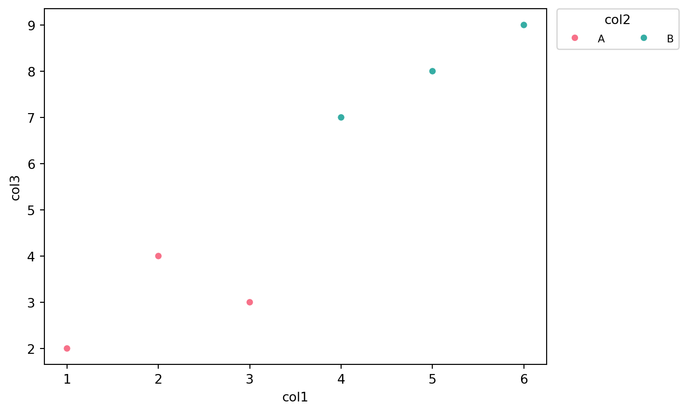

Code
# import pandas as pd
# # read the "Alabama" sheet and show the first few rows
# df = pd.read_excel("VA_State_US (1).xlsx", sheet_name="Alabama")
# print(df[5,].to_markdown())Precipitation - NOAA (National Oceanic and Atmospheric Administration). This data uses the PDSI metric. Which is an indicator of how much water is available compared to the average amount of water normally available in that region. It factors in precipitation, temperature, and soil moisture. This data tells us the monthly PDSI of each region of each state for each year. It is reasonable to average across regions, because for each state the regions are roughy equal in size.
Farm Income - USDA (United States Department of Agriculture). This website contains an excel spreadsheet that can be downloaded. This excel file contians a sheet for each state. Each state’s sheet contains a column per year where each row contains dollar values for different parts of a State’s agricultural profits. It includes crop, livestock, and expense data among other things.
The Precipitation dataset is a .txt file. It’s first column contains a code for the state, division, element (in this case PDSI), and year. It then contains a column for each month, which contains the PDSI value for that month.
An example row from the txt file:
State code = 01 (which corresponds to a state) Division number = 01 (first climate division in Florida) Element code = 05 (PDSI) Year = 1895 January PDSI value = 0.11 February PDSI value = -0.81 March PDSI value = -0.56 … and so forth through December.
The Farm Income dataset is an .xlsx file made up of several sheets, one for each state as well as informational guides. It contains rows of data separated by year in columns, containing income data across several different industry types. We chose to focus on food-type crops, found in the first block-like row section of each state sheet.
An example row from the text file:
# import pandas as pd
# # read the "Alabama" sheet and show the first few rows
# df = pd.read_excel("VA_State_US (1).xlsx", sheet_name="Alabama")
# print(df[5,].to_markdown())The combined dataset contains information from both datasets joined on the state and the year. It provides PDSI averages for the state along with the state’s to total income, and income by crop category. An example row of the data is included below.
import pandas as pd
print(pd.read_csv("combined_farm_precip.csv").head(1).to_markdown())| | state | year | Value of crop production | Crop cash receipts | Cotton | Feed crops | Food grains | Fruits and nuts | Oil crops | Vegetables and melons | All other crops | Home consumption | Inventory adjustment | yearly_avg |
|---:|--------:|-------:|---------------------------:|---------------------:|---------:|-------------:|--------------:|------------------:|------------:|------------------------:|------------------:|-------------------:|-----------------------:|-------------:|
| 0 | 1 | 1949 | 250813 | 230275 | 150706 | 13405 | 231 | 4937 | 30196 | 14421 | 16238 | 39680 | -19142 | 1.18625 |These functions will use a url file to produce write multiple files. The raw output from the url to a txt and csv file. It then produces a table that provides the average PDSI per state per year and writes it to a csv.
Overview:
Input is a url containing a .txt file. Uses requests package to have requests.get output. Saves a .csv file and uses txt_to_csv() (see below) to save .txt file of dataset. Calls txt_to_csv as part of process.
Args:
url:str - a url pointing to a remote .txt file. (“https://www.ncei.noaa.gov/pub/data/cirs/drd/drd964x.pdsi.txt”) txt_name:str - the name the .txt file will be saved to. (“name.txt”) csv_name:str - the name the .csv file will be saved to. (“name.csv”) col_specs:list - contains tuples that indicate how to break string into parts. Must be same length as cols.([(0, 2), (2, 4), (4, 6), (6, 10),(10, 17)]) cols:list - contains names of new columns that are created with col_specs. Must be same length as col_specs. (cols = [“col1”, “col2”, “col3”, “col4”,“col5”])
Impact: Returns None. This function will write files, but will not return anything.
Overview:
Reads txt file. Parses government coding system from first column into various columns. Converts strings cells containing PDSI information to numeric values, Writes new broken up table to csv.
Args: txt_name:str - the name the .txt file will be saved to. (“name.txt”) csv_name:str - the name the .csv file will be saved to. (“name.csv”) col_specs:list - contains tuples that indicate how to break string into parts. Must be same length as cols.([(0, 2), (2, 4), (4, 6), (6, 10),(10, 17)]) cols:list - contains names of new columns that are created with col_specs. Must be same length as col_specs. (cols = [“col1”, “col2”, “col3”, “col4”,“col5”])
Impact: Returns None. This function will write files, but will not return anything.
Example:
import requests
import pandas as pd
from farm_precip_project import read_url_txt, txt_to_csv
url = "https://www.ncei.noaa.gov/pub/data/cirs/drd/drd964x.pdsi.txt"
txt_name = "rain.txt"
csv_name = "rain_dirty.csv"
colspecs = [
(0, 2), (2, 4), (4, 6), (6, 10),
(10, 17), (17, 24), (24, 31), (31, 38),
(38, 45), (45, 52), (52, 59), (59, 66),
(66, 73), (73, 80), (80, 87), (87, 94)
]
cols = [
"state", "division", "element", "year",
"jan","feb","mar","apr","may","jun","jul","aug",
"sep","oct","nov","dec"
]
read_url_txt(url, txt_name, csv_name, colspecs, cols)
print(pd.read_csv(csv_name).head(1).to_markdown())Overview: Averages the PDSI across months for each row, and saves it as a new column. This is the yearly average PDSI for each district of each state. Creates a new table averaging the yearly PDSI for every state across all its districts. Writes the table to a csv.
Args: df_to_read:str - contains name of csv to read. new_col_name:str - name of new column that is added when calculating average for each row. csv_name_clean:str - name of csv you want to save your calculated table to. (“averaged_vals.csv”) months:list - contains strings of values that will be used to calculate the averages for each row. ([“col1”,“col2”,“col3”]) groups:list - contains strings of values to group by when calculating averages across rows. ([“group1”, “group2”])
Impact: Returns None. This function will write files, but will not return anything.
Example:
import pandas as pd
from farm_precip_project import normalized_data
months = ["jan","feb","mar",'apr',"may","jun","jul","aug","sep","oct","nov","dec"]
groups = ["state","year"]
new_col_name = "yearly_avg"
csv_name_clean = "rain_clean.csv"
df_to_read = "rain_dirty.csv"
normalized_data(df_to_read, new_col_name, csv_name_clean, months, groups)
print(pd.read_csv(csv_name_clean).head(1).to_markdown())| | state | year | yearly_avg |
|---:|--------:|-------:|-------------:|
| 0 | 1 | 1895 | -0.821354 |These functions extract and standardize farm income and crop-category data from historical USDA Excel workbooks. The workflow converts wide, state-specific tables into a tidy format with one row per state per year, matching the structure of FarmIncome.xlsx. The cleaned output is written to a CSV file for direct merging with the PDSI dataset.
Overview:
Finds the first row in a DataFrame whose first column exactly matches a specified text label. This is used to locate crop-category rows (e.g., Cotton, Food grains) in the VA workbook sheets.
Args:
- df: pd.DataFrame — DataFrame read from an Excel sheet
- label: str — row label to search for in the first column
Impact:
Returns a pandas Series for the matched row, or None if the label is not found. This function does not write files.
Overview:
Extracts crop-related income values for a single state from the VA workbook and returns a standardized table with one row per year. The function maps Excel year headers to columns, pulls relevant crop-category rows, and formats the results to match the structure of FarmIncome.xlsx.
Args:
- va_path: str — path to the VA workbook
- sheet_name: str — name of the Excel sheet corresponding to the state
- state_id: int — numeric identifier for the state (1–48)
- years_needed: list[int] — years to extract
Impact:
Returns a pd.DataFrame containing: - state, year - Value of crop production - Crop cash receipts - Cotton - Feed crops - Food grains - Fruits and nuts - Oil crops - Vegetables and melons - All other crops - Home consumption - Inventory adjustment
No files are written by this function.
Overview:
Builds a complete farm income dataset for all 48 contiguous U.S. states by looping through each state sheet in the VA workbook, extracting standardized crop data, and combining the results into a single tidy table.
Key steps: 1. Reads FarmIncome.xlsx to obtain the target years and column order
2. Assigns numeric state IDs (1–48) in alphabetical order
3. Extracts yearly crop data for each state using extract_state_rows
4. Concatenates, sorts, and aligns all state data
5. Writes the final dataset to a CSV file
Args:
None
Impact:
Returns None. Writes the cleaned dataset to: - FarmIncome_full.csv
from farm_precip_project import scrape_farm_data
scrape_farm_data()Done. Wrote 3168 rows to FarmIncome_full.csv.We created a function to merge two datasets on specific values and to save the merged data in a csv.
Overview: Reads two .csv files. Merges the files on a set of columns. Writes the merged table to a .csv.
Args: new_csv_name:str Name to use for merged .csv file (“merged.csv”) csvs:list Contains two strings where each string is a .csv to be read and merged ([“tble1.csv”, “tble2.csv”]) group_on:list Contains strings where each string is a column to be grouped on ([“col1”, “col2”, “col3”])
Impact: Returns None. Writes a new .csv file
Example:
Starting csvs:
csvs = ["FarmIncome_full.csv", "rain_clean.csv"]
print(pd.read_csv(csvs[0]).head(1).to_markdown())
print(pd.read_csv(csvs[1]).head(1).to_markdown())| | state | year | Value of crop production | Crop cash receipts | Cotton | Feed crops | Food grains | Fruits and nuts | Oil crops | Vegetables and melons | All other crops | Home consumption | Inventory adjustment |
|---:|--------:|-------:|---------------------------:|---------------------:|---------:|-------------:|--------------:|------------------:|------------:|------------------------:|------------------:|-------------------:|-----------------------:|
| 0 | 1 | 1949 | 250813 | 230275 | 150706 | 13405 | 231 | 4937 | 30196 | 14421 | 16238 | 39680 | -19142 |
| | state | year | yearly_avg |
|---:|--------:|-------:|-------------:|
| 0 | 1 | 1895 | -0.821354 |Merging them:
import pandas as pd
from farm_precip_project import merge_csvs
csvs = ["FarmIncome_full.csv", "rain_clean.csv"]
group_on = ["state", "year"]
new_csv_name = "combined_farm_precip.csv"
merge_csvs(new_csv_name, csvs, group_on)
print(pd.read_csv(new_csv_name).head(1).to_markdown())| | state | year | Value of crop production | Crop cash receipts | Cotton | Feed crops | Food grains | Fruits and nuts | Oil crops | Vegetables and melons | All other crops | Home consumption | Inventory adjustment | yearly_avg |
|---:|--------:|-------:|---------------------------:|---------------------:|---------:|-------------:|--------------:|------------------:|------------:|------------------------:|------------------:|-------------------:|-----------------------:|-------------:|
| 0 | 1 | 1949 | 250813 | 230275 | 150706 | 13405 | 231 | 4937 | 30196 | 14421 | 16238 | 39680 | -19142 | 1.18625 |This section performs exploratory analysis on the merged precipitation–farm income dataset to validate data quality, summarize distributions, and visualize temporal and cross-sectional relationships between normalized precipitation (PDSI) and crop income. All figures are saved as high-resolution PNG files.
The combined dataset produced by merge_csvs() is read once and reused across all EDA functions.
import pandas as pd
import matplotlib.pyplot as plt
df = pd.read_csv("combined_farm_precip.csv")This dataset contains one row per state per year, including normalized precipitation (yearly_avg) and multiple farm income variables.
basic_summary(df)
Provides a quick integrity check of the dataset by displaying sample rows, descriptive statistics, and missing-value counts.
def basic_summary(df):
print(df.head())
print(df.describe())
print(df.isna().sum())
basic_summary(df) state year Value of crop production Crop cash receipts Cotton \
0 1 1949 250813 230275 150706.0
1 1 1950 267006 229713 130815.0
2 1 1951 292913 264151 177427.0
3 1 1952 298393 277208 189744.0
4 1 1953 331899 263726 180347.0
Feed crops Food grains Fruits and nuts Oil crops Vegetables and melons \
0 13405.0 231.0 4937.0 30196.0 14421.0
1 13510.0 245.0 4850.0 32003.0 12494.0
2 14241.0 192.0 6245.0 23205.0 13414.0
3 9517.0 268.0 5274.0 25783.0 20143.0
4 9779.0 682.0 7388.0 24700.0 16534.0
All other crops Home consumption Inventory adjustment yearly_avg
0 16238 39680 -19142 1.186250
1 35796 39254 -2143 -0.492812
2 29427 35748 -7278 -1.152396
3 26479 49808 -28897 -1.601042
4 24296 46457 21395 -0.649375
state year Value of crop production Crop cash receipts \
count 3168.000000 3168.000000 3.168000e+03 3.168000e+03
mean 24.500000 1981.500000 1.473636e+06 1.470690e+06
std 13.855586 19.053379 2.769639e+06 2.793789e+06
min 1.000000 1949.000000 5.650000e+02 2.253000e+03
25% 12.750000 1965.000000 2.175792e+05 2.086222e+05
50% 24.500000 1981.500000 5.789210e+05 5.651050e+05
75% 36.250000 1998.000000 1.692684e+06 1.666231e+06
max 48.000000 2014.000000 4.026474e+07 4.156413e+07
Cotton Feed crops Food grains Fruits and nuts \
count 1.174000e+03 3.164000e+03 2.762000e+03 3.103000e+03
mean 2.232031e+05 3.878076e+05 1.699410e+05 1.737764e+05
std 3.318479e+05 9.674393e+05 2.858749e+05 1.046789e+06
min 1.000000e+00 7.800000e+01 7.000000e+00 1.000000e+00
25% 3.471475e+04 1.758300e+04 9.850500e+03 4.111000e+03
50% 9.750950e+04 8.435900e+04 5.627450e+04 1.273900e+04
75% 2.811865e+05 3.168780e+05 2.047168e+05 4.485600e+04
max 2.926707e+06 1.346560e+07 2.568081e+06 2.338434e+07
Oil crops Vegetables and melons All other crops Home consumption \
count 2.389000e+03 3.106000e+03 3.168000e+03 3168.000000
mean 3.384814e+05 1.856867e+05 2.069825e+05 5582.379735
std 6.801232e+05 6.251124e+05 4.841141e+05 7164.140540
min 1.000000e+00 3.500000e+01 1.450000e+02 42.000000
25% 1.223000e+04 1.300925e+04 2.193900e+04 1140.750000
50% 7.950900e+04 4.281200e+04 5.448850e+04 3141.500000
75% 3.121970e+05 1.260885e+05 1.949538e+05 7235.500000
max 6.359326e+06 8.306708e+06 6.188771e+06 70132.000000
Inventory adjustment yearly_avg
count 3.168000e+03 3168.000000
mean -2.613662e+03 -1.204919
std 2.572786e+05 11.339128
min -4.449283e+06 -92.053810
25% -1.588250e+04 -0.947478
50% 8.100000e+01 0.125583
75% 2.265875e+04 1.235286
max 4.748899e+06 6.186389
state 0
year 0
Value of crop production 0
Crop cash receipts 0
Cotton 1994
Feed crops 4
Food grains 406
Fruits and nuts 65
Oil crops 779
Vegetables and melons 62
All other crops 0
Home consumption 0
Inventory adjustment 0
yearly_avg 0
dtype: int64Precipitation over time Plots the national mean yearly PDSI across all states.
def precip_trend_figure(df):
mean_precip_by_year = df.groupby("year")["yearly_avg"].mean()
plt.figure(figsize=(12,6))
plt.plot(mean_precip_by_year)
plt.xlabel("Year")
plt.ylabel("Mean Normalized Precipitation")
plt.title("Average Precipitation Across the U.S. Over Time")
plt.tight_layout()
plt.savefig("precip_over_time.png", dpi=300)
plt.close()
precip_trend_figure(df)Plots the national mean crop cash receipts by year.
def crop_income_fig(df):
mean_income_by_year = df.groupby("year")["Crop cash receipts"].mean()
plt.figure(figsize=(12,6))
plt.plot(mean_income_by_year)
plt.xlabel("Year")
plt.ylabel("Mean Crop Cash Receipts")
plt.title("Crop Income Trends Over Time")
plt.tight_layout()
plt.savefig("crop_income_over_time.png", dpi=300)
plt.close()
crop_income_fig(df) All state-year observations Scatter plot of normalized precipitation versus crop cash receipts.
def precip_v_income(df):
plt.figure(figsize=(12,6))
plt.scatter(df["yearly_avg"], df["Crop cash receipts"], s=10)
plt.xlabel("Normalized Precipitation")
plt.ylabel("Crop Cash Receipts")
plt.title("Precipitation vs. Crop Income")
plt.tight_layout()
plt.savefig("precip_vs_income_scatter.png", dpi=300)
plt.close()
precip_v_income(df)Each point represents a state averaged across all years.
def statcompscatt(df):
state_summary = df.groupby("state")[["yearly_avg", "Crop cash receipts"]].mean()
plt.figure(figsize=(12,6))
plt.scatter(state_summary["yearly_avg"], state_summary["Crop cash receipts"])
plt.xlabel("Mean Normalized Precipitation")
plt.ylabel("Mean Crop Cash Receipts")
plt.title("State-Level Income vs. Precipitation")
plt.tight_layout()
plt.savefig("state_level_precip_vs_income.png", dpi=300)
plt.close()
statcompscatt(df)correl(df) Computes the Pearson correlation between precipitation and crop income.
def correl(df):
corr = df[["yearly_avg", "Crop cash receipts"]].corr()
print("Correlation Matrix:\n", corr)
return corr
corr = correl(df)Correlation Matrix:
yearly_avg Crop cash receipts
yearly_avg 1.000000 -0.121813
Crop cash receipts -0.121813 1.000000Correlation heatmap Visual summary of the precipitation–income relationship.
def heatmap(corr):
plt.figure(figsize=(6,5))
plt.imshow(corr, cmap="coolwarm", vmin=-1, vmax=1)
plt.colorbar(label="Correlation")
plt.xticks([0,1], ["Precip", "Income"])
plt.yticks([0,1], ["Precip", "Income"])
plt.title("Correlation Heatmap")
plt.tight_layout()
plt.savefig("correlation_heatmap.png", dpi=300)
plt.close()
heatmap(corr)Running the EDA section produces the following figures:
precip_over_time.png
crop_income_over_time.png
precip_vs_income_scatter.png
state_level_precip_vs_income.png
correlation_heatmap.png
These functions will help us to center our data, remove data that contains errors. They will also help us plot variables on scatter plots and calculate correlation coefficients between the variables.
Overview: This function will return a new dataframe with rows removed based on the parameters given.
Args:
df:Pandas DataFrame. This must contain columns with the names passed in as other arguments. col_name:str. Name of column contianing the incorrect data. (“col3”) threshold:numeric. This is a numeric value to filter out values exceeding the threshold. We opted for this instead of equal to a threshold as simple functions already exist for that. (-50) lower:Bool. Indicates if filtering out all values less than, or greater than the threshold value. (True)
Impact: Returns a pandas DataFrame. Does not write to any files.
Example:
Original df
import pandas as pd
from farm_precip_project import remove_outliers
df = pd.DataFrame({
"col1": [1, 2, 3, 4],
"col2": [1, -3, 1, 1]
})
print(df) col1 col2
0 1 1
1 2 -3
2 3 1
3 4 1Using the function
import pandas as pd
from farm_precip_project import remove_outliers
df = remove_outliers(df, "col2", -1)
print(df) col1 col2
0 1 1
2 3 1
3 4 1Overview: This function will add another column to a dataframe that centers the data by group. In other words, it will take the mean of groups within the dataset. Then, it will take the values of that column, and for each row subtract the group mean that that row pertains to.
Args: df:Pandas DataFrame. This must contain columns with the names passed in as other arguments. col_name:str. Name of column that will have values centered “col4” col_group:list. Contains strings where each string is a column to be grouped on ([“col1”, “col2”, “col3”]) col_stand_name:str. Name for new column contains centered values. (“colCentered”)
Impact:
Returns df with an addition column for the centered data. Does not write any files.
Example:
Original df
import pandas as pd
from farm_precip_project import center_column
df = pd.DataFrame({
"col1": [1, 2, 3, 4, 5, 6],
"col2": ["A","A","A","A","A","A"]
})
print(df) col1 col2
0 1 A
1 2 A
2 3 A
3 4 A
4 5 A
5 6 AUsing the function
import pandas as pd
from farm_precip_project import center_column
col_name = "col1"
col_group = ["col2"]
col_stand_name = "col1_centered"
df = center_column(df, col_name, col_group, col_stand_name)
print(df) col1 col2 col1_centered
0 1 A -2.5
1 2 A -1.5
2 3 A -0.5
3 4 A 0.5
4 5 A 1.5
5 6 A 2.5Overview: Creates a plot using matplotlib library, saves it to a file and includes correlation between variables in plot.
Args: df:Pandas DataFrame. This must contain columns with the names passed in as other arguments. col1:str. Name of column to plot on x-axis. (“col3”) col2:str. Name of column to plot on y-axis. (“col2”) plot_file:str. File name for .png of plot. (“plot.png”) n_digits:int. Integer for rounding correlation coefficent value (4)
Impact: Returns the plot from a matplotlib.pyplot. Also saves the plot as a file.
Example:
from farm_precip_project import corr_and_plot, remove_outliers
import matplotlib.pyplot as plt
#prepping data for plot example
df = pd.read_csv('combined_farm_precip.csv')
col_name = "yearly_avg"
threshold = -50
df = remove_outliers(df, col_name, threshold, lower = True)
colx = "yearly_avg"
coly = "Value of crop production"
plot_file = f"plot_{colx}_vs_{coly}.png"
n_digits = 4
plot = corr_and_plot(df, colx, coly, plot_file,n_digits)
plt.show()
<Figure size 672x480 with 0 Axes>Overview: Uses seaborn package to produce a scatterplot that colors the data by a categorical variable in the df.
Args: df:Pandas DataFrame. This must contain columns with the names passed in as other arguments. colx:str. Name of column to plot on x-axis. (“col3”) coly:str. Name of column to plot on y-axis. (“col2”) colcat:str. Name of column containing categorical variable to group by. plot_file:str. File name for .png of plot. (“plot.png”)
Impact: Returns plot from matplotlib.pyplot. Also saves plot as a .png file.
Example:
import pandas as pd
import matplotlib.pyplot as plt
from farm_precip_project import make_scatter_w_cat
df = pd.DataFrame({
"col1": [1, 2, 3, 4, 5, 6],
"col2": ["A","A","A","B","B","B"],
"col3": [2, 4, 3, 7, 8, 9]
})
plot = make_scatter_w_cat(df, "col1", "col3", "col2", "example.png")
plt.show
<Figure size 672x480 with 0 Axes>